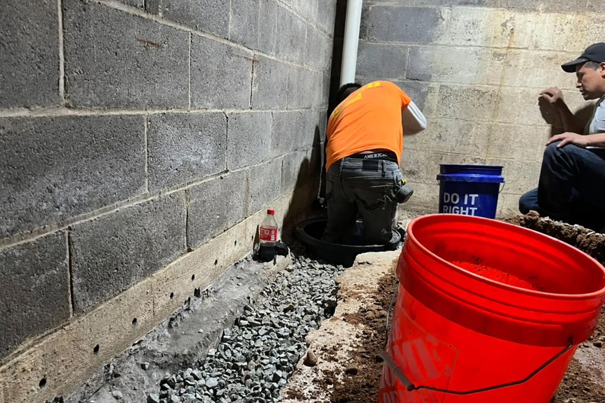
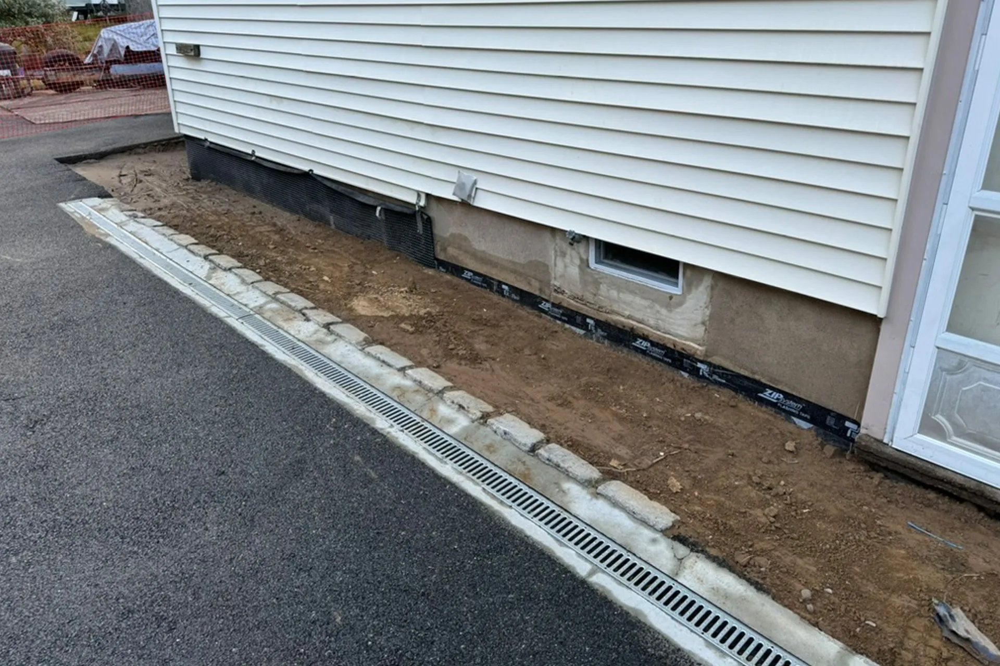
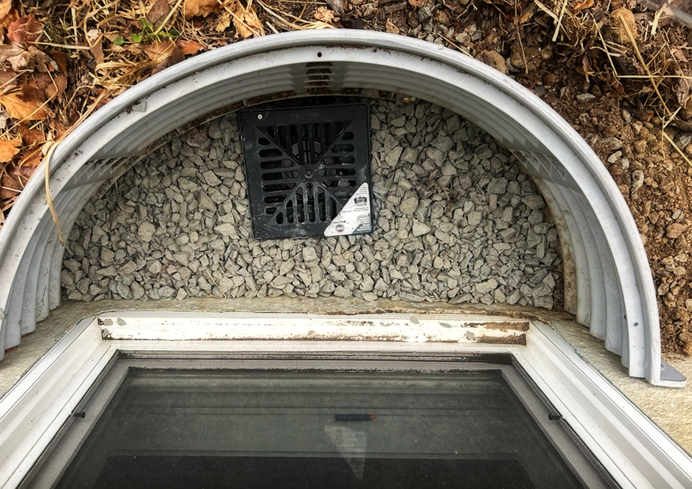

The Wall
The finished work is the argument, so photographs carry the page and the words get out of their way. Services become square photo tiles with the name on the picture and no description at all. Towns lose their photos and become three dense county columns.
Twelve services, all in house
ARD does not subcontract the work out. Same crew, same estimate, owner on site.

In 7 townsBasement Waterproofing
See the service → In 7 towns
In 7 townsFoundation Waterproofing
See the service → In 9 towns
In 9 townsInterior French Drains
See the service →
In 9 townsExterior French Drains
See the service → 05
05Channel Drains
See the service → 06
06Crawlspace Encapsulation
See the service → 07
07Sump Pumps
See the service →
08Window Wells & Egress Windows
See the service → 09
09Retaining Walls
See the service → 010
010Patios & Pavers
See the service → 011
011Driveway & Walkway
See the service → 012
012Masonry
See the service →Four counties, ten towns with a page
Dispatched from Smull Ave in West Caldwell. The number is how many job pages that town has.
French Drain Service in Summit, how we do it
Interior French Drains
Interior French drains are one of the most effective ways to deal with basement water that is already making its way through the foundation. Instead of trying to block every single entry point from the outside, an interior French drain relieves the pressure at the base of your walls and under your slab, then quietly moves that water into a sump pit for safe discharge. In Summit homes with finished basements, this approach is often less disruptive than full exterior excavation and can usually be completed in a shorter time frame. ARD Waterproofing has installed interior French drains in basements ranging from unfinished utility spaces to fully finished recreation rooms with carpeting and built‑ins.
How Interior French Drains Stop Basement Leaks in Summit, NJ Homes
In many Summit basements, water shows up in consistent places: along the cove joint where the wall meets the floor, in corners, or through vertical cracks. These are signs that groundwater is building up outside the foundation and pushing its way in wherever resistance is weakest. An interior French drain changes that equation. Instead of letting that water find random paths into your finished space, we create a dedicated collection zone along the inside edge of the foundation. Tiny weep holes may be drilled in block walls to relieve internal water, and the drain pipe captures that flow before it ever reaches your flooring or belongings.
For homeowners, the benefit is not just fewer puddles,it’s predictability. You know that when the ground is saturated after a week of rain, your French drain and sump pump are working together to manage that water. Pairing an interior French drain with wall vapor barriers and dehumidification can transform a previously damp, musty basement into a space you’re comfortable finishing or using for storage. Since Summit frequently sees heavy rain events and snowmelt in the same season, this kind of dependable system is critical. With ARD’s emphasis on neat work and careful planning, most interior French drain installations are completed efficiently while keeping disruption to your routine as low as possible.
When an Interior French Drain Is the Right Waterproofing Solution
We’ll recommend an interior French drain when we see repeated leaks along the perimeter, long‑standing dampness that has caused paint to peel or efflorescence to form, or musty smells that point to ongoing moisture. In some cases, an interior system is paired with targeted exterior improvements, like adjusting grading or installing channel drains, to reduce the amount of water the system has to handle. The key point is that we don’t push interior French drains where they’re not appropriate,we use them where they bring clear value and long‑term peace of mind. For many Summit homeowners, especially those with finished basements, this approach delivers the best balance of performance, cost, and disruption.
Exterior French Drains
Exterior French drains are designed to intercept water before it reaches your foundation. Installed along the outside of your home, often at or near footing depth, these systems capture groundwater and surface water and move it away from walls and slab edges. In Summit, where some properties sit lower than neighboring lots or back up to slopes and wooded areas, exterior French drains can be an excellent first line of defense. ARD Waterproofing evaluates soil type, grading, and existing drainage to determine whether an exterior system, an interior system, or a combination of both is most appropriate.
Exterior French Drains to Redirect Water Away from Your Foundation
In areas of Summit where yards slope toward the house or where neighboring properties shed water downhill, exterior French drains can make a dramatic difference. By capturing water along the upper edge of a yard or at the base of a hill, we prevent it from pooling against basement walls in the first place. This is especially helpful in older neighborhoods with limited storm sewer access, where heavy summer storms can quickly overwhelm the ground’s natural ability to absorb water. We design outlets and discharge points that work with the natural topography of your property, sending water to daylight where possible or tying into existing drainage systems when appropriate.
The goal is always the same: stop water from hugging your foundation. By redirecting it early, you lower the pressure on basement walls, reduce the chances of seepage, and help keep your foundation drier overall. For homeowners, this means fewer worries about long storms, less stress about landscaping washing out, and more confidence that the home’s structure is being protected from the outside in. We’ll walk you through where the French drain will run, how deep it will be, and where the discharge will go, so you’re completely comfortable with the plan before any soil is disturbed.
Comparing Exterior vs. Interior French Drains for Your Summit Property
Many homeowners in Summit ask whether they should choose an interior or exterior French drain. The answer depends on your specific situation. Interior French drains are typically more accessible, often less costly, and very effective when water is already entering or building up under the slab. They’re ideal for finished basements where you want to manage water at the inside perimeter and pair the system with a sump pump. Exterior French drains are more focused on intercepting water before it reaches the foundation, which can be especially valuable on sloped lots or properties that receive runoff from uphill neighbors.
When we visit your Summit home, we’ll explain how each option would work, what the installation process would look like, and what kind of disruption to expect. If you rarely use your basement but have significant exterior grading challenges, an exterior system may be a strong first move. If you rely on your basement as a living area or storage space and already see water coming in, an interior French drain may deliver quicker, more predictable relief. In some cases, the best solution is a hybrid approach that controls water both outside and inside. With ARD’s no‑upsell mindset, you’ll get a clear explanation and a recommendation that prioritizes long‑term performance and fairness, not the most expensive project.

Find out what your home actually needs
- Free estimate, in writing
- 100% lifetime transferable warranty
- We price-match any reasonable estimate
What New Jersey homeowners say
"He came out within 24 hours, had a detailed estimate for me that evening that didn't just explain what they were going to do but why"
"We worked with the ARD Waterproofing Company to install French Drains and a sump pump when our basement flooded numerous times. ARD was extremely help"
"Everything went incredibly well. Men who worked on the job were skilled and respectable. The owner of the company Was easy to deal with, honest , Pers"